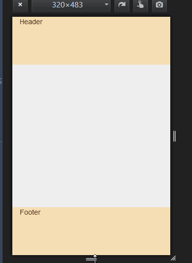

The Responsive Web Design (RWD) is based - among other features- on flexible layouts (which consists of the contents of the page being capable of dynamically resizing to any width). The basis for that is to use relative length units (usually percentages). With the Abstract layout, the GeneXus user can set widths in percentages for the elements of the form. Also, other relative length units called CSS Viewport Units are available. Viewport units are supported in GeneXus as well as absolute units such as px and pt. The viewport is the area of your browser where the actual content is displayed – that is, the web browser without its toolbars and buttons. The units are as follows:
They all represent a percentage of the browser (viewport) dimensions and scale accordingly on window resize. For example, suppose that we have a web page where the footer and header will each take 20% of the total height of the screen. In this case, using percentages for the height isn't useful because it won't take effect. (*)  The definition of each section class would be as follows:
.FooterSection {
height: 20vh;}
.HeaderSection{
height: 20vh;}
.ContainerForm{
height: 60vh;}
See Browser's support here. See AlsoHowTo: Taking up the full height of the page
(*) What's the condition for the percentage of the div's height to take effect? The percentage of your div is connected to the div that contains it. For instance: <div id="wrapper"> #wrapper {
|
| Backlinks | |
| HowTo: Resizing font size depending on the viewport size | HowTo: Responsive vertical centering |
| HowTo: Taking up the full height of the page |